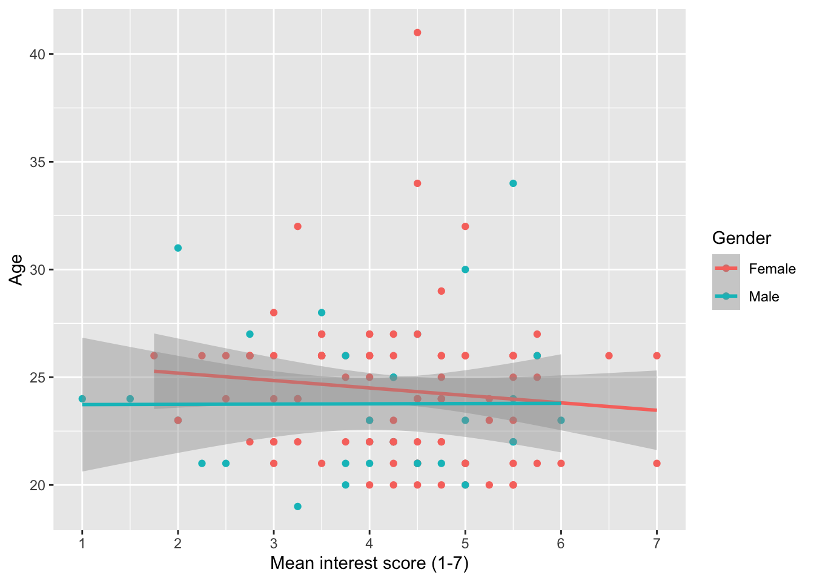
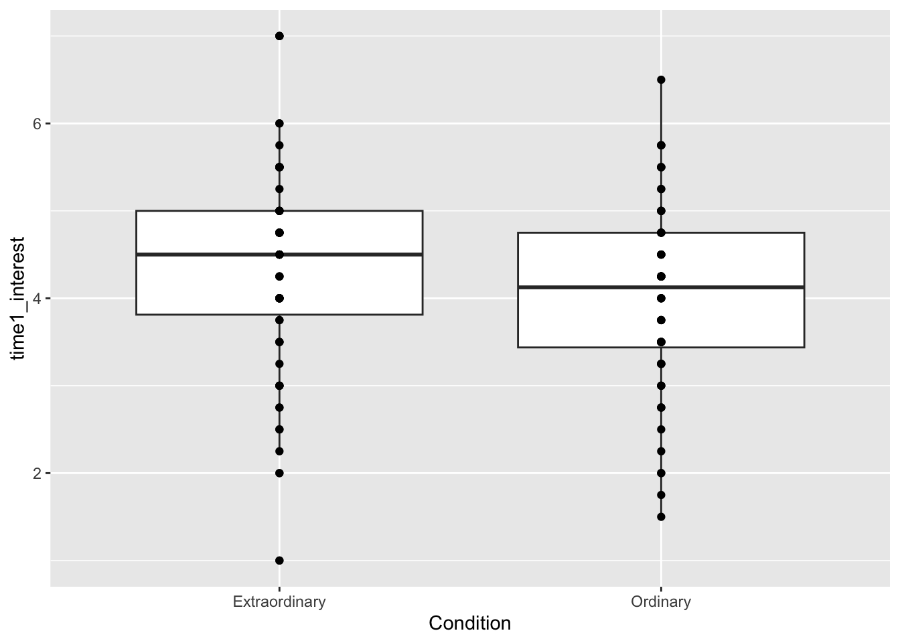
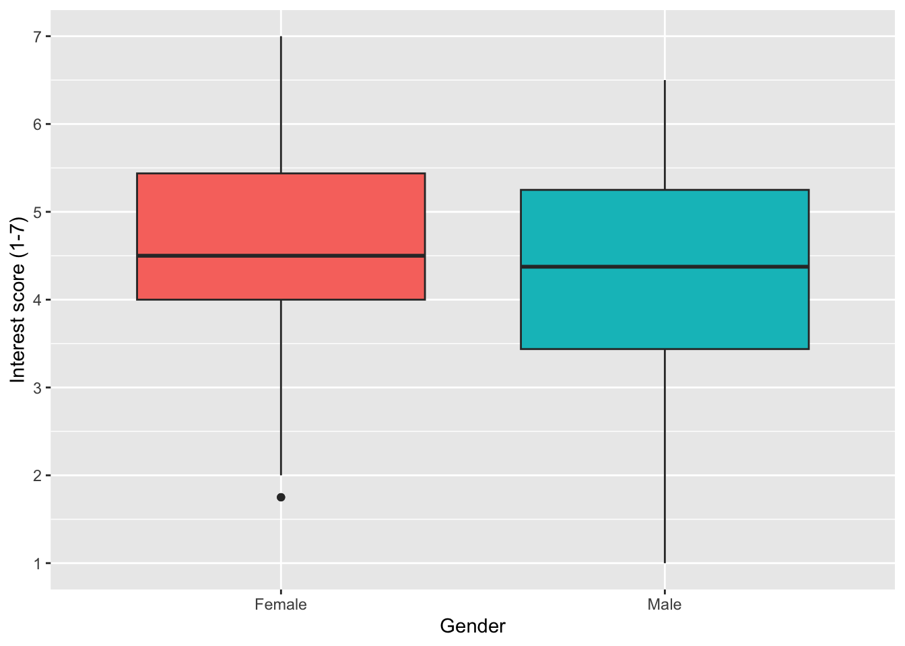
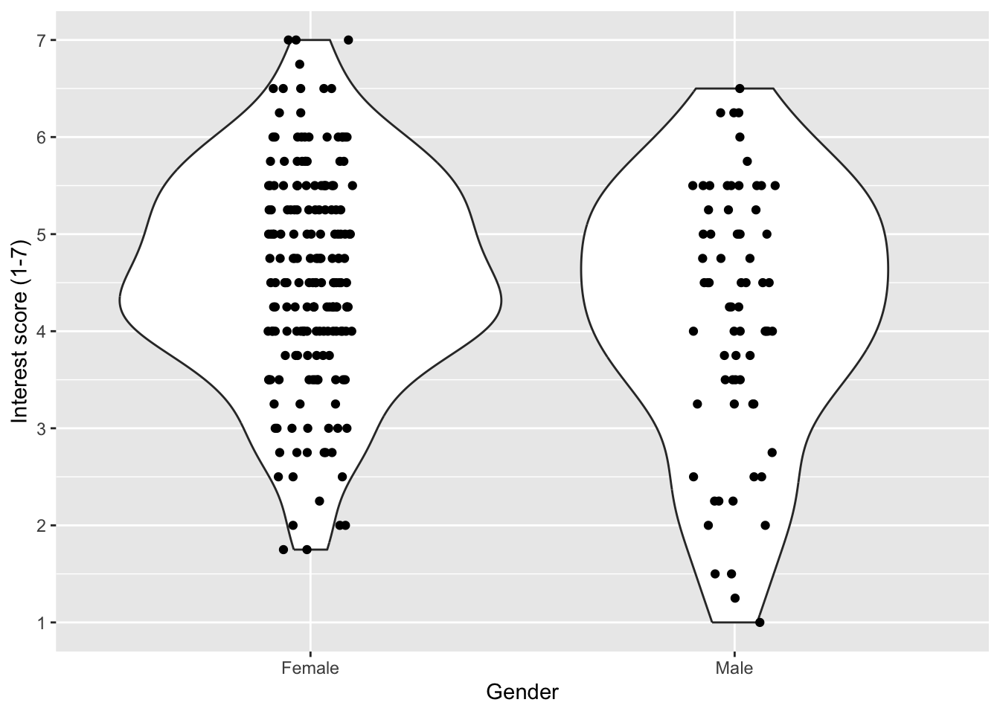
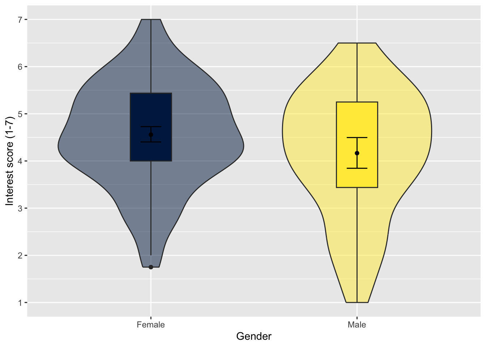
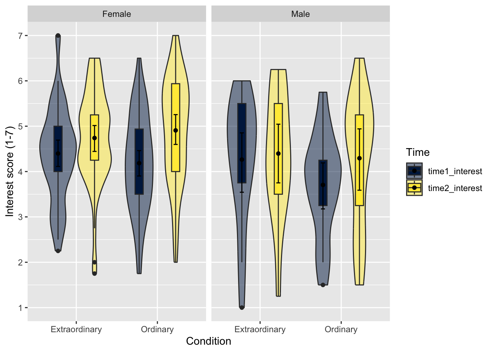
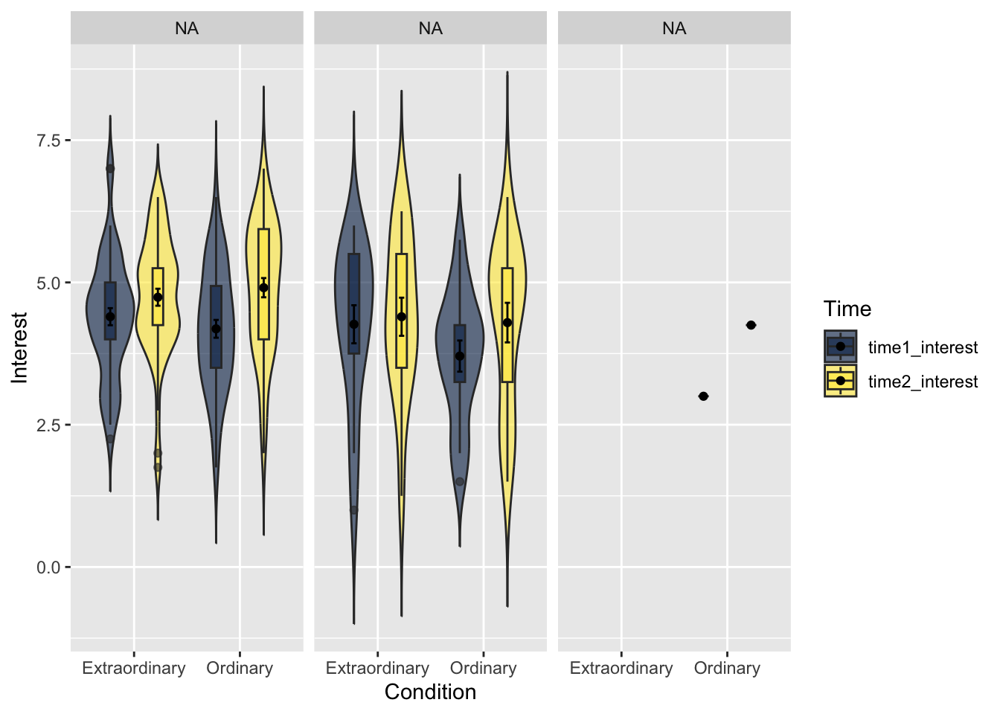

# Load the tidyverse package below
library(tidyverse)
# Load the data file
# This should be the Zhang_2014.csv file
zhang_data <- read_csv("data/Zhang_2014.csv")
# Wrangle the data for plotting.
# select and rename key variables
# mutate to add participant ID and recode
zhang_data <- zhang_data %>%
select(Gender,
Age,
Condition,
time1_interest = T1_Predicted_Interest_Composite,
time2_interest = T2_Actual_Interest_Composite) %>%
mutate(participant_ID = row_number(),
Condition = case_match(Condition,
1 ~ "Ordinary",
2 ~ "Extraordinary"),
Gender = case_match(Gender,
1 ~ "Male",
2 ~ "Female")) 7 Scatterplots, boxplots, and violin-boxplots
In this chapter we are going to focus on visualising data using ggplot2. You’ve already created a number of different plots including bar charts, scatterplots, histograms, qq-plots, and violin-boxplots, but now we will show you how to customise your plots further to give you a better idea of the range and flexibility of visualising data in R.
Chapter Intended Learning Outcomes (ILOs)
By the end of this chapter, you will be able to:
- ILO1.
7.1 Chapter preparation
7.1.1 Introduction to the data set
For this chapter, we are using open data from Zhang et al. (2014). The abstract of their article is:
Although documenting everyday activities may seem trivial, four studies reveal that creating records of the present generates unexpected benefits by allowing future rediscoveries. In Study 1, we used a time-capsule paradigm to show that individuals underestimate the extent to which rediscovering experiences from the past will be curiosity provoking and interesting in the future. In Studies 2 and 3, we found that people are particularly likely to underestimate the pleasure of rediscovering ordinary, mundane experiences, as opposed to extraordinary experiences. Finally, Study 4 demonstrates that underestimating the pleasure of rediscovery leads to time-inconsistent choices: Individuals forgo opportunities to document the present but then prefer rediscovering those moments in the future to engaging in an alternative fun activity. Underestimating the value of rediscovery is linked to people’s erroneous faith in their memory of everyday events. By documenting the present, people provide themselves with the opportunity to rediscover mundane moments that may otherwise have been forgotten.
In summary…
7.1.2 Organising your files and project for the chapter
Before we can get started, you need to organise your files and project for the chapter, so your working directory is in order.
In your folder for research methods and the book
ResearchMethods1_2/Quant_Fundamentals, create a new folder calledChapter_07_dataviz. WithinChapter_07_dataviz, create two new folders calleddataandfigures.Create an R Project for
Chapter_07_datavizas an existing directory for your chapter folder. This should now be your working directory.Create a new R Markdown document and give it a sensible title describing the chapter, such as
07 Scatterplots Boxplots Violins. Delete everything below line 10 so you have a blank file to work with and save the file in yourChapter_07_datavizfolder.We are working with a new data set, so please save the following data file: Zhang_2014.csv. Right click the link and select “save link as”, or clicking the link will save the files to your Downloads. Make sure that you save the file as “.csv”. Save or copy the file to your
data/folder withinChapter_07_dataviz.
You are now ready to start working on the chapter!
7.1.3 Activity 1 - Read and wrangle the data
As the first activity, try and test yourself by completing the following task list to practice your data wrangling skills. Create an object called zhang_data to be consistent with the tasks below. If you just want to focus on data visualisation, then you can just type the code in the solution.
Try this
To wrangle the data, complete the following tasks:
Load the
tidyverse package.Read the data file
data/Zhang_2014.csv.-
Select the following columns:
GenderAgeConditionT1_Predicted_Interest_Compositerenamed totime1_interestT2_Actual_Interest_Compositerenamed totime2_interest.
There is currently no identifier, so create a new variable called
participant_ID. Hint: tryparticipant_ID = row_number().-
Recode two variables to be easier to understand and visualise:
Gender: 1 = “Male”, 2 = “Female”.
Condition: 1 = “Ordinary”, 2 = “Extraordinary”.
Your data should now be in wide format and ready to create a scatterplot.
Show me the solution
You should have the following in a code chunk:
7.1.4 Activity 2 - Explore the data
Try this
After the wrangling steps, try and explore zhang_data to see what variables you are working with. For example, opening the data object as a tab to scroll around, explore with glimpse(), or try plotting some of the individual variables to see what they look like using visualisation skills from Chapter 3.
In zhang_data, we have the following variables:
| Variable | Type | Description |
|---|---|---|
| Gender | character | |
| Age | double | |
| Condition | character | |
| time1_interest | double | |
| time2_interest | double | |
| participant_ID | integer |
7.2 Activity 3: Scatterplots
7.2.1 Basic scatterplot
Now let’s make a scatterplot plotting Age and interest to see if there is any relationship between the two. We need to specify both the x and y-axis variables. The following code will produce a very simple scatterplot. Again, you wouldn’t use this graph in a paper, but for eye-balling your data it would suffice.
7.2.2 Axis labels
From this plot it doesn’t look like there is much of a relationship between age and interest ratings. We can now change the labels using the same scale functions as before.
7.2.3 Adding a regression line
It’s often useful to add a regression line or line of best fit to a scatterplot. The regression line is added with geom_smooth() and by default will also provide a 95% confidence interval. You can specify what type of line you want to draw, most often you will need method = lm, i.e., a linear model or a straight line. Look up the help documentation for geom_smooth() and see what other methods you can use.
7.2.4 Grouped scatterplots
We can use ggplot to show how the relationship might differ for different populations within our data. We do this by adding colour() to aes() and setting it as whatever variable we would like to distinguish between. In this case, we will see how the relationship between age and interest differs for the male and female participants. There are a few participants with missing gender so we will first filter them out.
zhang_data %>%
ggplot(aes(x = time1_interest, y = Age, colour = Gender))+
geom_point()+
scale_x_continuous(name = "Mean interest score (1-7)") +
scale_y_continuous(name = "Age")+
geom_smooth(method=lm)
And here’s that plot with the labels tidied up. Notice the use of scale_color_discrete() to adjust the labels for Gender.
When you change the labels, R will simply overwrite the names in the dataset. If you wanted to actually change the order of the categories (e.g., have male as the red line) you need to change the order of the factor. We will do this later, for now, just be sure that you’re changing the name of the right category (i.e., female comes first))
ggplot(zhang_data, aes(x = time1_interest,y = Age, colour = Gender))+
geom_point()+
scale_x_continuous(name = "Mean interest score (1-7)") +
scale_y_continuous(name = "Age")+
geom_smooth(method=lm)+
scale_color_discrete(name = "Gender",
labels = c("Female", "Male"))7.3 Activity 4: Boxplots
7.3.1 Basic boxplot
- Remember to add pivot_longer step.
The following code will produce a simple boxplot for eye-balling your data.
7.3.2 Adding data points
If we add another layer geom_point() we can add our raw data points to our boxplots to make them more informative.

However, this plot suffers from over-plotting, that is, there are multiple data points on top of each other. We can change this by using geom_jitter(), which adds a layer of points that are jittered so that each one is visible.
height and width affect how much each point is jittered. Play around with the values to see how it affects the data points.
7.3.3 Adding colour
We may want to add colour to our graph (and for consistency, we’ll sort out the labels). We do this by adding the ‘fill’ argument to the ggplot aesthetic by specifying which variable the colour of the fill should be organised by.
ggplot(zhang_data, aes(x = Condition, y = time1_interest, fill = Condition))+
geom_boxplot()+
geom_jitter(height = 0, width = .1)+
scale_x_discrete(name = "Condition") + # note the x-axis is discrete
scale_y_continuous(name = "Mean interest rating (1-7)")+
scale_fill_discrete(guide = FALSE) # this suppresses the legend because we don't need it
7.3.4 Boxplots for multiple factors
When you only have one IV, using the fill command to change the colour is a little redundant, as the colours don’t add any additional information. It makes more sense to use colour to represent an additional IV.
For this example, we’ll use Condition and time as IVs. fill() now specifies a second IV, rather than repeating the IV on the x-axis as in the previous plot.
With multiple IVs the command to overlay the raw data points changes as the data points also need dodged (try running the code with the previous geom_jitter function to see what happens)
7.3.5 Colour-blind friendly options
There is one more fill option that we can use. Rather than specifying scale_fill_discrete(), we can use scale_fill_viridis_d(). This function does exactly the same thing but it uses a colour-blind friendly palette (which also prints in black and white). There are 5 different options for colours and you can see them by changing option to A, B, C, D or E. Personally I like option E with alpha = .6 (to control transparency) but that’s not an official School position.
7.4 Activity 5: Reordering factors
R orders categorical variables alphabetically. For gender it didn’t really matter whether male or female was represented first and for time 1 and 2 it makes sense for them to be in this order but we may want to change the order of Condition (in my mind it makes more sense for Ordinary to come first, but that may just be me).
To do this we can use mutate() and fct_level() to change the factor levels to the order we want.
Now we can re-run the boxplot. That’s better.
7.5 Activity 7: Violin plots
7.5.1 Basic violin plot
Violin plots are so-called because with a normal distribution the shape would look something like a violin. They show density, i.e., the fatter the violin the more data points there are for that value.
7.5.2 Violin plots with raw data points
Like the boxplot, we can also add the raw data points to our violin plot, making sure to use jitter to avoid over-plotting.
ggplot(zhang_data_long, aes(x = Condition, y = Interest))+
geom_violin()+
geom_jitter(height = 0, width = .1)
It’s important to remember that R is very literal. ggplot2 works on a system of layers. It will add new geoms on top of existing ones and it won’t stop to think whether this is a good idea. Try running the above code but put geom_jitter() first and then add geom_violin(). The order of your layers matters.
7.6 Activity 8: Violin-boxplots
One increasingly common graph is a violin + boxplot + summary plot that shows a huge amount of information about your data in a single plot.
- This code uses two calls to
stat_summary()that was introduced during the t-test chapter. The first draws apointto represent the mean, and the second draws anerrorbarthat represents standard error (mean_se).
-
guidesis a new function and can be used to adjust whether legends are displayed. This has the same effect as specifyingshow.legend = FALSEin bothgeom_violin()andgeom_boxplot()but it uses less code to do so.
-
fatten = NULLremoves the median line from the boxplots. This can be useful if you’re running a test where you’re comparing means as it makes it easier to see the point range. - You may get warning messages telling you that R has removed rows containing missing values, you do not need to worry about this.
ggplot(zhang_data_long, aes(x = Condition, y = Interest, fill = Condition))+
geom_violin(alpha = .6, trim = FALSE)+
geom_boxplot(width = .2, alpha = .7, fatten = NULL)+
stat_summary(fun = "mean", geom = "point") +
stat_summary(fun.data = "mean_se", geom = "errorbar", width = .1) +
scale_fill_viridis_d(option = "E", label = c("Ordinary", "Extraordinary"))+
scale_y_continuous(name = "Mean interest rating (1-7)") +
guides(fill = FALSE)
7.7 Activity 9: Faceting
ggplot2 contains a facet function that produces different plots for each level of a grouping variable which can be very useful when you have more than two factors, for example, for a three-way ANOVA. The following code displays produces violin-boxplots for Condition ~ interest, but separately for male and female participants.
- This code adds an extra argument
position = position_dodge(.9)to align the layers with the violin plots. Try removing this argument from each layer to see what happens, and also try adjusting the value from.9to another number.
ggplot(zhang_data_long, aes(x = Condition, y = Interest, fill = Time))+
geom_violin(alpha = .6, trim = FALSE)+
geom_boxplot(width = .2,
alpha = .6,
fatten = NULL,
position = position_dodge(.9))+
stat_summary(fun = "mean", geom = "point",
position = position_dodge(.9)) +
stat_summary(fun.data = "mean_se", geom = "errorbar", width = .1,
position = position_dodge(.9))+
scale_fill_viridis_d(option = "E") +
facet_wrap(~Gender)
7.7.1 Facet labelling
Finally, changing the labels within the facets is a little more complicated - there’s no additional scale layer, instead, you adjust this inside facet_wrap() using labeller. This has always felt unintuitive to me and I have to look it up every single time so don’t worry if it is confusing - just remember where to look for the example.
ggplot(zhang_data_long, aes(x = Condition, y = Interest, fill = Time))+
geom_violin(alpha = .6, trim = FALSE)+
geom_boxplot(width = .2,
alpha = .6,
fatten = NULL,
position = position_dodge(.9))+
stat_summary(fun = "mean", geom = "point",
position = position_dodge(.9)) +
stat_summary(fun.data = "mean_se", geom = "errorbar", width = .1,
position = position_dodge(.9))+
scale_fill_viridis_d(option = "E") +
facet_wrap(~Gender, labeller = labeller(Gender = (c(female = "Female", male = "Male"))))
7.8 Test yourself
To end the chapter, we have some knowledge check questions to test your understanding of the concepts we covered in the chapter. We then have some error mode tasks to see if you can find the solution to some common errors in the concepts we covered in this chapter.
7.8.1 Knowledge check
Question 1. We have…
Question 2. We are…
Question 3. Our data..
Question 4. We want…
Question 5. If we…
7.8.2 Error mode
The following questions are designed to introduce you to making and fixing errors. For this topic, we focus on the new types of data visualisation. Remember to keep a note of what kind of error messages you receive and how you fixed them, so you have a bank of solutions when you tackle errors independently.
Create and save a new R Markdown file for these activities. Delete the example code, so your file is blank from line 10. Create a new code chunk to load
Below, we have several variations of a code chunk error or misspecification. Copy and paste them into your R Markdown file below the code chunk to load
Question 6. Copy the following code chunk into your R Markdown file and press knit.
Explain the solution
Question 7. Copy the following code chunk into your R Markdown file and press knit.
Explain the solution
Question 8. Copy the following code chunk into your R Markdown file and press knit.
Explain the solution
7.9 Words from this Chapter
Below you will find a list of words that were used in this chapter that might be new to you in case it helps to have somewhere to refer back to what they mean. The links in this table take you to the entry for the words in the PsyTeachR Glossary. Note that the Glossary is written by numerous members of the team and as such may use slightly different terminology from that shown in the chapter.
7.10 End of chapter
Blah.